프로젝트 소개
전남 나주시 빛가람동 42 일대 타운하우스 분양광고에 사용 될 조감도와 투시도 및 아이소메트릭 이미지 제작에 대한 작업 과정과 결과물입니다.

전남지역에서 꾸준히 저희 업체에 광역도 및 조감도, 투시도를 의뢰 해주시는 업체입니다. 일전에 작업한 내용들과 흡사하지만 좀 더 큰 규모의 사업내용으로 연락주셨습니다.
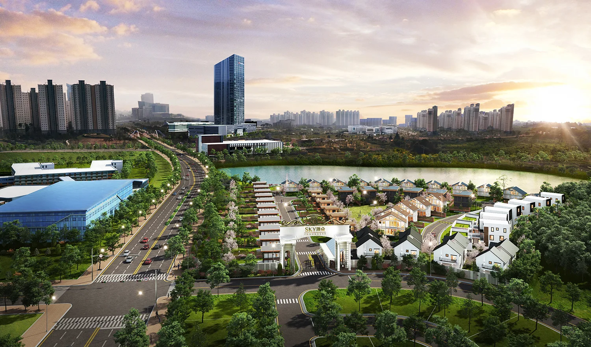
**작업 진행시 부각되었으면하는 건물을 미리 말씀해주시면 뷰선정에 도움이 됩니다.
나주 혁신도시는 2013년도부터 한국전력 및 각종 주요기관들이 이전하여 떠오르는 신흥 도심으로 뛰어난 미래 가치를 가진 지역이라 생각됩니다. 메이크 그룹도 해당 도시에 주거지 구성에 협업할 수 있게 되어 매우 영광이라고 생각합니다.
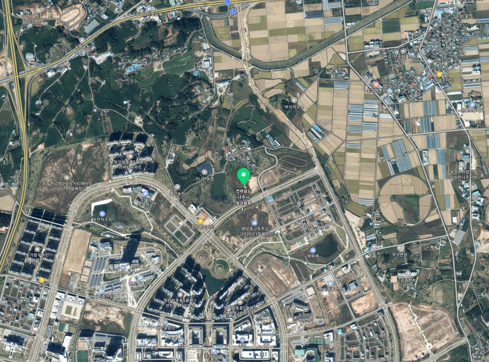
설계 타입별로 외부 투시도를 각각 제작해드렸었고 밝고 깨끗한 느낌의 투시도를 원하셨습니다.
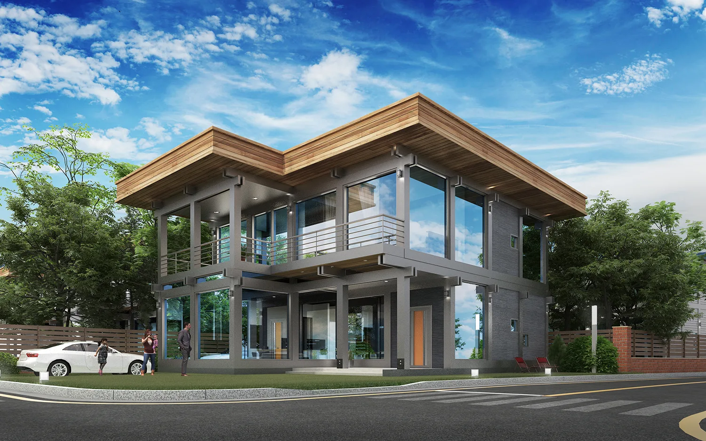
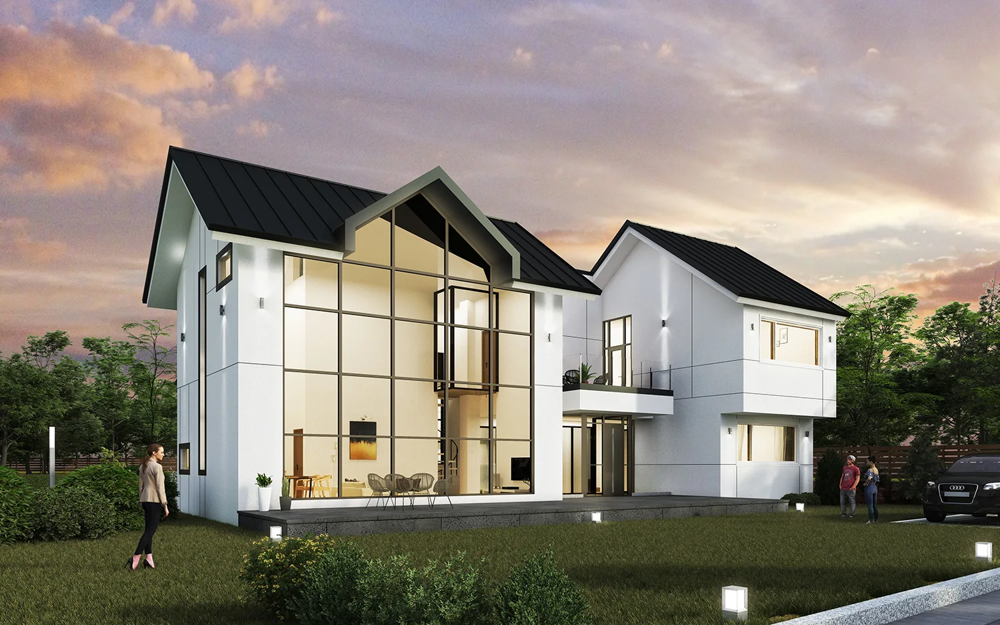
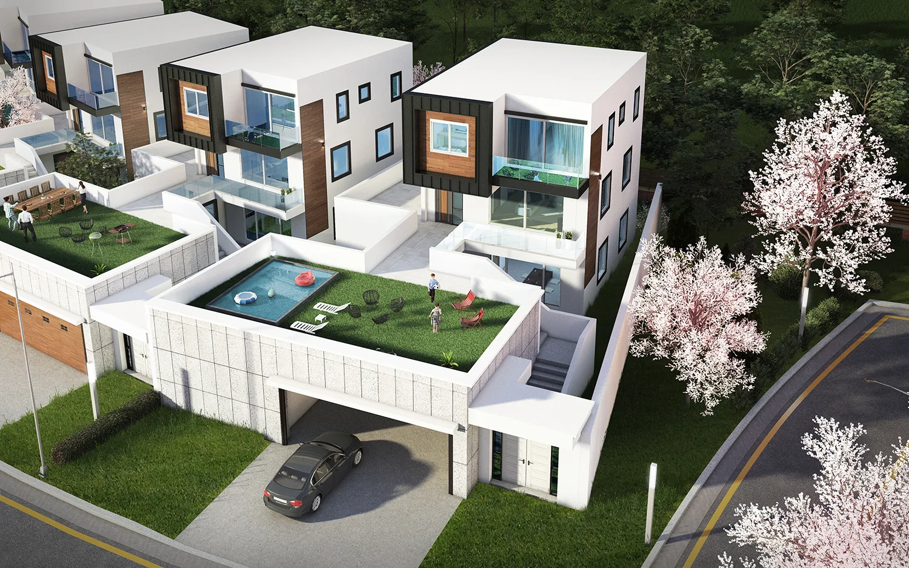
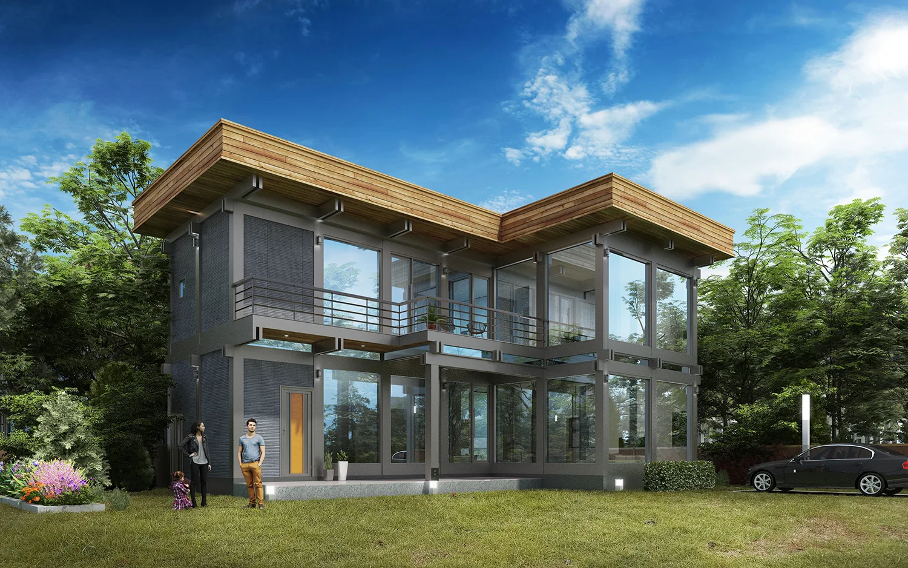
단위세대 설계가 다양하여 총 7개 타입이였습니다.
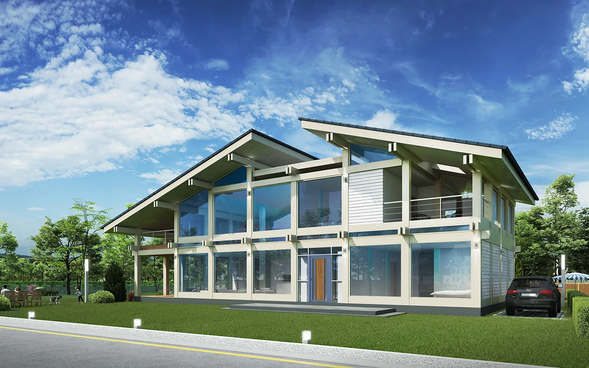
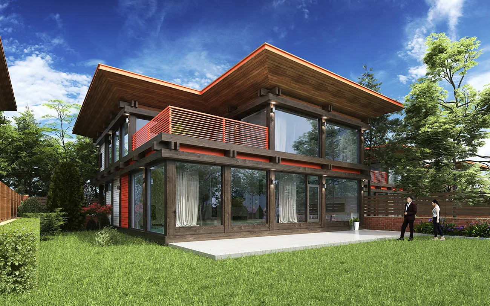
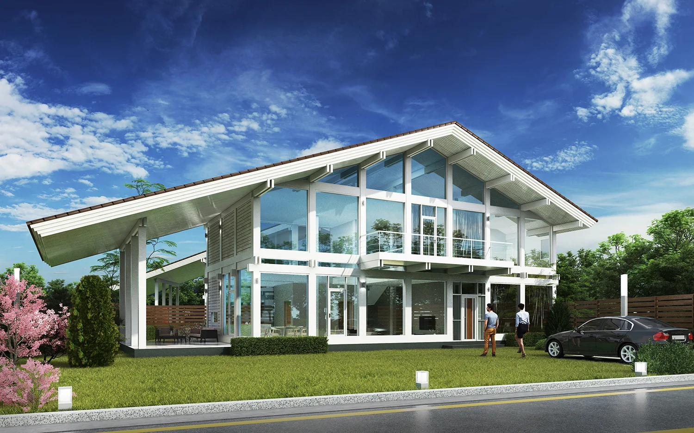
배치도 입니다. 생각보다 많은 세대가 입주 할 수 있고 작은 마을규모의 인구가 생활 할 수 있는 단지입니다.
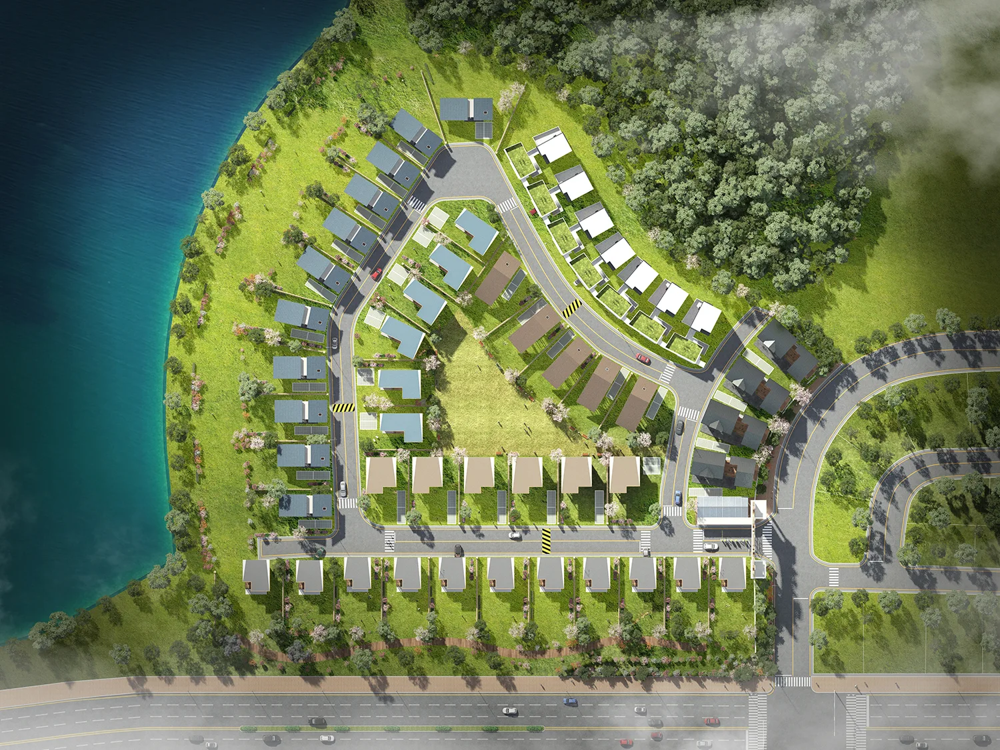
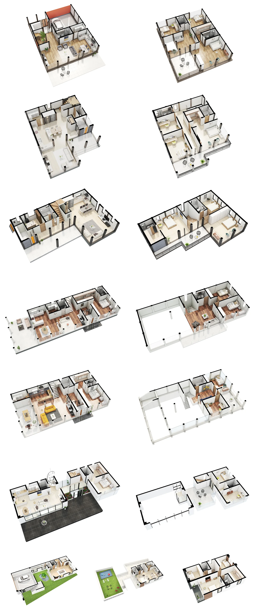
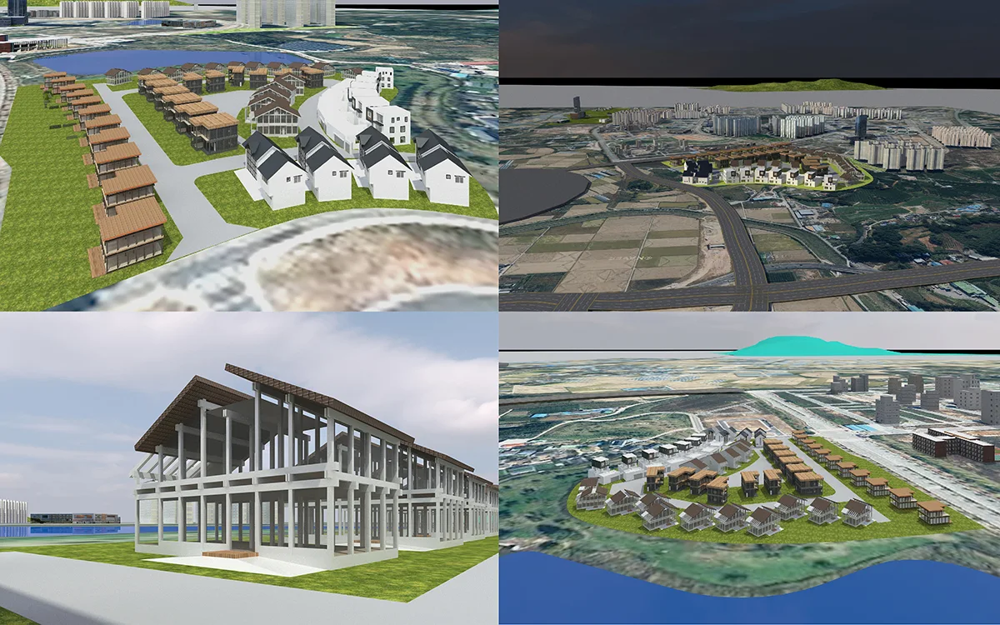
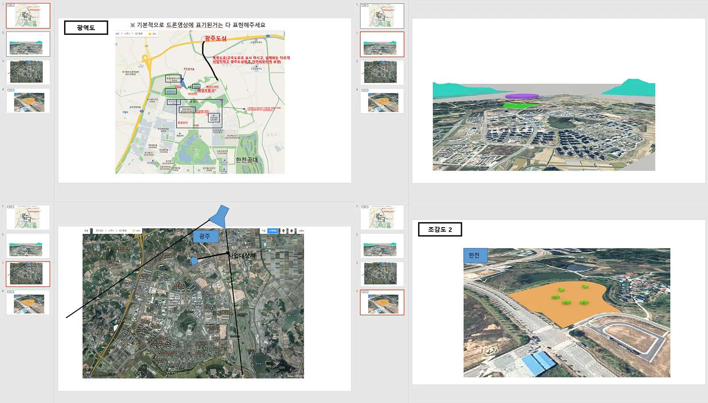
뷰선정 단계에서 바로 피드백을 주셔서 빠르게 수정하여 작업을 진행할수 있었습니다.
보통 이미지를 제작하다 보면 처음에 구상한 것과는 다르게 이미지의 카메라의 앵글이나 배치를 변경해야 하는 경우가 많습니다.
메이크 그룹은 고객께서 원하시는 다양한 요청을 최대한 반영하여 원하시는 이미지, 아름다운 이미지가 제작 될 수 있도록 최선의 노력을 다하고 있습니다.
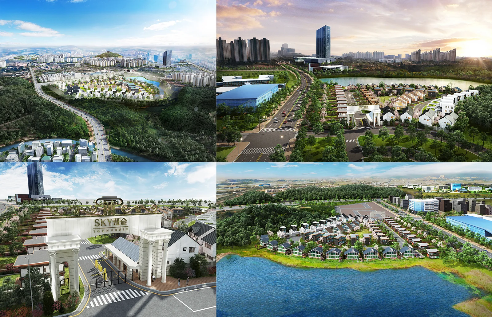
광역도의 경우 완전히 뷰가 변경되었고 나머지 이미지들도 고객님께서 원하시는 뷰로 조금씩 변경하여 제작이 진행되었습니다.
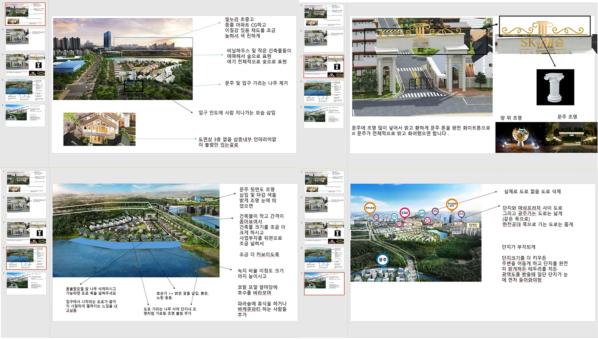
수정사항을 정리하여 PPT파일로 전달해주셨습니다.
수정사항을 하나의 파일로 만들어 보내주시면 신속하게 처리가 가능합니다.
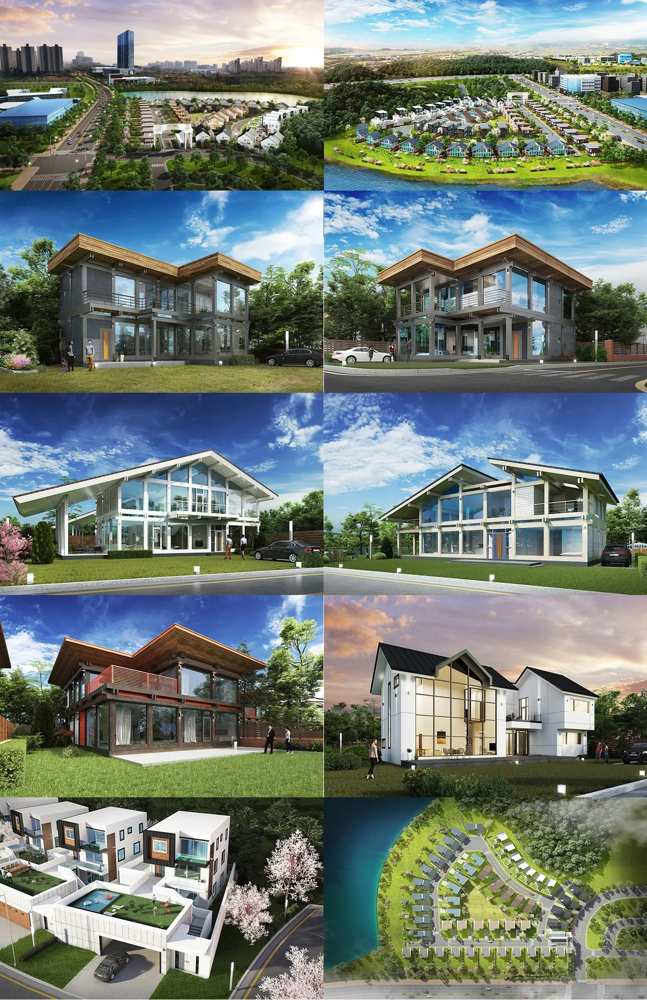
베이비붐 세대가 퇴직 연한이 다가오면서 편안한 노후를 보낼 수 있는 타운하우스 기획 광고 이미지 제작 문의를 많이 주고 계십니다.
그리고 메이크그룹을 믿어주셔서 맡겨주셨고 많은 타운하우스들의 이미지를 제작 할 수 있게 되어서 감사드립니다.
저희가 최선을 다해 원하시는 이미지 제작에 도움을 드리겠습니다. 감사합니다.